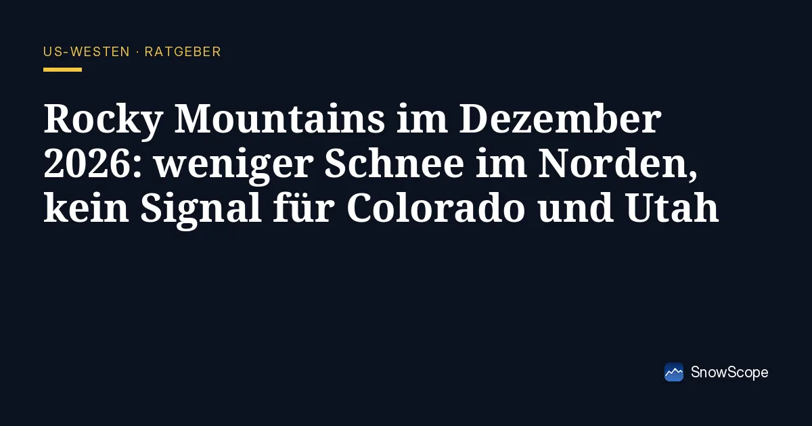

Rocky Mountains im Dezember 2026: weniger Schnee im Norden, kein Signal für Colorado und Utah
Der Dezember in den Rocky Mountains wird etwa 0,9 °C wärmer als üblich ausfallen, während der Niederschlag nahe seinem langjährigen Durchschnitt bleibt. Das Bild unterscheidet sich stark je nach Breitengrad: nördliche Gebiete deuten auf mageren Saisonstart mit weniger Schnee, während Colorado und Utah keine klare Tendenz zeigen.
Die Live-Schneeprognose für Rocky Mountains in der SnowScope-AppSchneehöhen, Pulverschnee-Alarme und 3D-Karte, gratis.

Wo sich die Signale teilen
SnowScope vergleicht jedes Skigebiet mit seinen eigenen vergangenen Dezembern. In den Rocky Mountains zeigen vier von fünf Gebieten—79 Prozent—keine Neigung zu schneiereren oder mageneren Bedingungen. Ein Fünftel deutet auf weniger Schnee, fast ausschließlich im Norden vom Yellowstone-Plateau hinab durch die Gebiete bei Jackson und Big Sky. Nur eine Handvoll südlicher Peaks in Utah deuten auf schneieere Verhältnisse an, gerade mal 1 Prozent der Region.
Die Chancen auf überdurchschnittlich viel Neuschnee reichen von 27 Prozent in den trockensten Gebieten bis 62 Prozent in den nassesten, mit einem Mittelwert von 45 Prozent über die ganze Spanne.
Temperatur und Feuchte: der Grund für die Aufteilung
Einundfünfzig Saisonvorhersagen des europäischen Wetterzentrums stimmen darin überein, dass der Dezember wärmer als der Referenzzeitraum (1993–2016) ausfallen wird. Die Wärmung ist nicht einheitlich: sie erreicht ihren Höhepunkt in den Nördlichen Rockies mit 1,7 °C, wo 82 Prozent der Läufe Erwärmung zeigen und nur 33 Prozent feuchte Anomalien. In Colorado schwächt sich das Signal auf 0,3 °C ab, und in Utah liegt es bei 1,0 °C. Der Niederschlag bleibt unterdessen 3 Prozent unter einem Dezember-Durchschnitt von 40 mm über die ganze Spanne, wobei die Ensemble fast gleichmäßig aufgeteilt ist—45 Prozent nasser, 55 Prozent trockener.
Diese Mischung—mäßige Wärmung und normaler oder leicht trockener Niederschlag—lässt Colorado und Utah in statistischer Schwebe. Die Nördlichen Rockies dagegen sehen sich einem wärmeren, leicht trockeneren Setup gegenüber, das historisch für dünnere Dezember-Schneedecken spricht.


Colorado: neutrales Gelände
Skigebiete in Colorado (Breckenridge, Vail, Winter Park, Beaver Creek, Steamboat, Copper Mountain) sehen normalerweise 51 cm Neuschnee im Dezember. Diese Vorhersage ruft 46 cm auf—etwas weniger, aber im normalen Variationsbereich. Nur 42 Prozent der vergangenen Dezember mit ähnlichen Bedingungen waren schneereich. Das größere Bild ist die Tiefe: bis zum 31. Dezember hat Colorado normalerweise 84 cm Schnee am Boden; der Ausblick zeigt 80 cm, nahezu identisch.
Vergangene Dezember, die diesem Jahr ähnelten, waren 1995, 1985 und 2003. Keiner war entweder schneereich oder schneearm; sie waren gewöhnliche Monate. Das ist, was die Vorhersage nun nahelegt: plane für einen typischen Dezember und passe an, wenn einzelne Stürme größer oder kleiner als der Saisonsdurchschnitt ausfallen.
Utahs Wasatch: auf Kurs für den Durchschnitt
Utahs höheres, nasseres Gelände (Park City, Deer Valley, Snowbird, Alta, Solitude) fängt normalerweise 71 cm Neuschnee in einem normalen Dezember. Der Saisonausblick deutet wiederum auf 70 cm—nahezu identisch. Die Chance, den langjährigen Mittelwert zu übertreffen, liegt bei 47 Prozent. Am 31. Dezember hat die Wasatch normalerweise 103 cm Schnee am Boden, und das erwartet die Vorhersage auch.
Keine Überraschung zu planen: Utah sieht sich auf Kurs für einen Dezember, wie er in den vergangenen Jahrzehnten üblich war. Die Hauptvariable wird sein, wann Stürme ankommen und wie hoch die Schneegrenze an warmen Tagen steigt.
Nördliche Rockies: magerer Anfang, dann beobachten
Skigebiete in Montana und Wyoming (Big Sky, Jackson Hole, Whitefish, Sun Valley, Bridger Bowl) sehen sich einem mageneren Dezember entgegen. Die Vorhersage ruft 60 cm Neuschnee auf—unter den üblichen 65 cm—und nur eine 37-prozentige Chance, den Dezember-Mittelwert zu übertreffen. Tiefe am 31. Dezember wird auf 102 cm prognostiziert, was dem langjährigen Durchschnitt entspricht. Die Magerkeit kommt von überdurchschnittlicher Wärmung und durchschnittlichem Niederschlag: Schnee wird fallen, aber weniger Tage werden kalt genug dafür sein.
Höhe, nordseitige Hänge bieten einen Vorteil früh im Monat, bevor Schmelze oder Wind die Basis ausdünnen. Je weiter der Monat voranschreitet, umso mehr zählt die 7-Tage-Vorhersage als das monatliche Muster. Ein oder zwei große Pazifik-Stürme können die monatliche Summe umkehren, also prüfe die Wochenvorhersage vor der Abreise, statt dich auf die Saisonssicht zu verlassen.
Praktische Schlussfolgerung
Skifahrer aus Colorado und Utah sollten einen normalen Dezember planen und ohne Zögern buchen. Die Nördlichen Rockies verdienen eine kleine Absicherung: strebe frühes Dezember hohes Gelände an, und sei bereit, später im Monat der neuesten Sturmstrecke zu folgen. Alle drei Regionen werden davon profitieren, die SnowScope-Karte sieben Tage vor der Reise zu prüfen—sie zeigt genaue Sturmzeitpunkte und die Schneegrenze nach Höhe, Details, die ein Monatsausblick nicht erfassen kann.
Tipps für Skifahrer
- Colorado und Utah: behandle dies als einen Standard-Dezember. Kein Signal aus der Vorhersage spricht dafür, deine Pläne zu ändern.
- Nördliche Rockies: bevorzuge hohe, nordseitige Pisten früh im Dezember, während die Basis am frischesten ist. Tiefere Pisten und Südhänge können schneller als üblich ausdünnen.
- Beobachte die 7-Tage-Vorhersage eine Woche vor der Reise. Ein einzelner großer Pazifik-Sturm kann das Dezember-Bild umgestalten und Schneegrenzen um hunderte Meter verschieben.
- Nutze SnowScope's tägliche Karte, um die Schneegrenze in jedem Gebiet zu bestimmen und deine Fahrten im steilen Gelände darüber zeitlich abzustimmen.
- Packe Schichten und Sonnencreme ein: wärmerer Dezember bedeutet mehr Sonne und schnellere Schmelze auf Südhängen, besonders am Nachmittag.
Zu diesen Zahlen
Die Schneehöhen der Skigebiete sind der meiste Schnee in den oberen Hängen am angegebenen Tag; es sind Schätzungen für eine Fläche, keine Messung an einem Punkt. Prognosen können sich ändern. Lies vor dem Freeriden immer den offiziellen Lawinenlagebericht.
Diesen Bericht zitieren
Für Forschung, Lehre oder Presse: Zahlen und Grafiken sind unter CC BY 4.0 mit dieser Quellenangabe frei nutzbar.
SnowScope (2026), Rocky Mountains im Dezember 2026: weniger Schnee im Norden, kein Signal für Colorado und Utah, https://snowscope.app/blog/de/2026/11/rocky-mountains-december-2026-snow-outlook.html, abgerufen am 2026-11-10
SnowScope (Atlas Labs). (2026, November 10). Rocky Mountains im Dezember 2026: weniger Schnee im Norden, kein Signal für Colorado und Utah. SnowScope snow reports. https://snowscope.app/blog/de/2026/11/rocky-mountains-december-2026-snow-outlook.html
BibTeX
@misc{snowscope2026rockymountainsdecember20,
author = {{SnowScope (Atlas Labs)}},
title = {Rocky Mountains im Dezember 2026: weniger Schnee im Norden, kein Signal für Colorado und Utah},
year = {2026},
month = nov,
howpublished = {\url{https://snowscope.app/blog/de/2026/11/rocky-mountains-december-2026-snow-outlook.html}},
note = {Published 2026-11-10 09:32 UTC; accessed 2026-11-10}
}· CC BY 4.0 · Methoden, Daten und Werkzeuge →
Rocky Mountains folgen
Gratis: eine Nachricht, wenn Neuschnee kommt, und jeden Morgen die Vorhersage.
Weitere Schneeberichte

Wie du den ersten Tag in Park City Mountain, Utah, verbringst und wann du fährst: Unsere Schneehistorie gibt etwa 71 in (180 cm) als übliches Maximum an der Mittelstation in 46 vergangenen Wintern.

Mt Baker, Washington: etwa 133 in (337 cm) übliches Maximum an der Mittelstation in 46 vergangenen Wintern, ein Schneefall-Weltrekord, keine Unterkunft am Berg.

Mammoth Mountain nach Saison planen: etwa 93 in (235 cm) übliches Maximum an der Mittelstation in 46 vergangenen Wintern, März am tiefsten, lange Frühjahre, schwankende Winter.